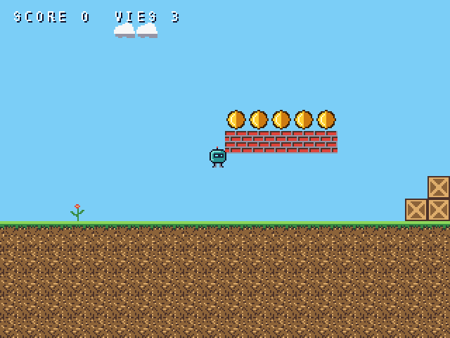
Une seule cartouche pour fabriquer un petit jeu de A à Z sur la MONOCORE-1 : les images, les bruitages, la musique, le programme, et le jeu pour y jouer aussitôt.
MONOATELIER réunit dans une seule ROM cinq programmes qui travaillent ensemble. Comme c'est une seule ROM, la MiSTer leur donne une seule sauvegarde : ce qu'on fabrique dans un outil est aussitôt disponible pour les autres et pour le jeu. Aucun ordinateur n'est nécessaire entre les étapes.
| Touche | Programme | Pour faire |
|---|---|---|
| F1 | MONOPIXEL | les images : les tuiles et les personnages pixel par pixel, les palettes, les animations, les décors, ce que sont les tuiles (murs, plateformes, eau…) et où sont les objets |
| F2 | MONOSFX | les bruitages : saut, pièce, explosion… 32 sons par banque, avec des générateurs |
| F3 | MONOTRACKER | la musique : des morceaux de 16 pistes, au clavier, à la souris ou au clavier MIDI |
| F4 | MONOBASIC | le programme : un BASIC avec des instructions faites pour les jeux |
| F5 | PLATEFORMES | un jeu tout fait, qui prend vos images, vos sons et votre musique |
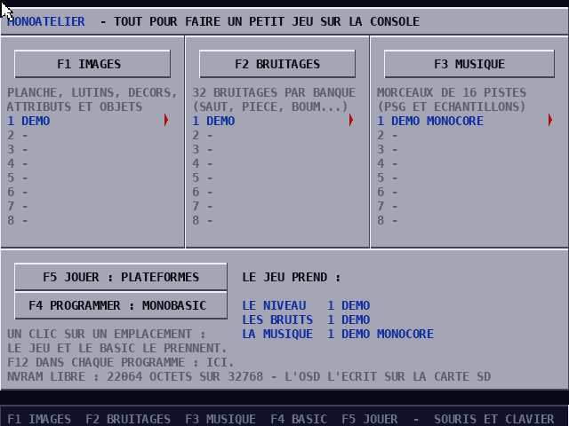
releases/v5_haute_resolution/) : les outils sont en 640 × 480 entrelacé, et un core plus ancien affiche un message ;MONOCORE_*.rbf dans _Console sur la carte SD, et le boot.rom du même dossier dans games/MONOCORE.outils/MONOATELIER.mnc dans games/MONOCORE.Le dossier outils/ contient aussi chaque programme seul : MONOPIXEL.mnc, MONOSFX.mnc, MONOTRACKER.mnc, MONOBASIC.mnc et PLATEFORMES.mnc. Ils fonctionnent exactement de la même façon, mais chacun a sa propre sauvegarde. L'atelier, lui, les partage. Pour reprendre dans l'atelier un travail fait avec un outil seul, voyez le chapitre 8.
Depuis le lanceur, F1 à F5 (ou un clic sur les boutons) ouvrent les programmes. Dans chacun, F12 ramène au lanceur. S'il reste des modifications non sauvées, le programme le dit, et il faut appuyer une seconde fois sur F12 pour partir quand même. Dans le jeu, START + COIN sur la manette fait la même chose.
Chaque outil sauve dans la NVRAM avec Ctrl S. La MiSTer n'écrit la NVRAM sur la carte SD (saves/MONOCORE/MONOATELIER.sav) que lorsqu'on ouvre le menu (OSD). Prenez l'habitude : Ctrl S, puis ouvrir et refermer le menu, avant d'éteindre.
Le jeu PLATEFORMES et vos programmes BASIC prennent les images, les bruitages et la musique de l'atelier. Par défaut, c'est le dernier emplacement sauvé par chaque outil. Un clic sur un emplacement du lanceur le choisit à la place, et la flèche rouge se déplace. Un second clic revient au choix automatique. Le cadre du bas résume ce que le jeu prendra. S'il manque quelque chose, le jeu utilise la démonstration qu'il contient.
Un parcours complet, pas à pas : on part de la démonstration, on la transforme avec chaque outil, puis on écrit son propre programme.
Ce chapitre suppose l'atelier tout neuf : les colonnes du lanceur sont vides et chaque outil démarre sur sa démonstration.
Dans le lanceur, appuyez sur F5. PLATEFORMES démarre avec ses propres images. B1 (ou Espace) commence la partie : gauche et droite pour courir, B1 pour sauter (plus haut en le tenant), bas + B1 pour descendre d'une plateforme de pierre. Ramassez les pièces, sautez sur les ennemis violets, évitez l'eau, et allez jusqu'au drapeau. F12 ramène au lanceur.
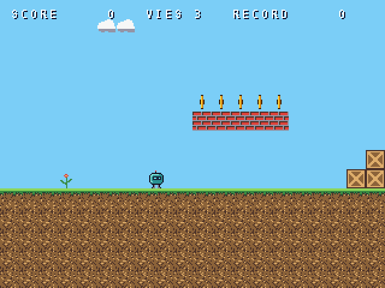
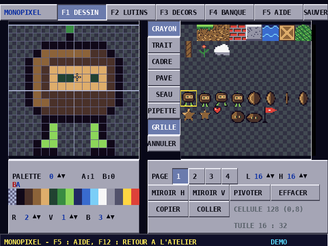
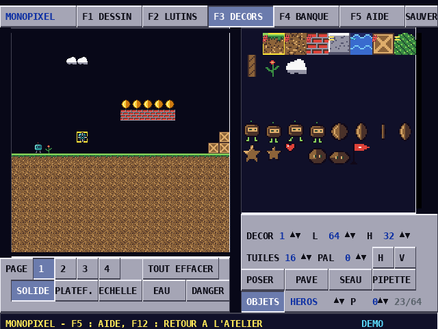
F3 ouvre MONOTRACKER, qui joue sa démonstration. Pour ce premier parcours, sauvez-la simplement avec Ctrl S : elle sera la musique du jeu. Le chapitre 5 et le manuel de MONOTRACKER expliquent comment composer la vôtre.
De retour dans le lanceur, les trois colonnes montrent vos sauvegardes, et le cadre du bas indique que le jeu les prendra. F5 : votre héros, votre niveau, votre saut, votre musique.
EXEMPLE puis Entrée : un petit jeu de plateformes de 26 lignes est chargé.RUN (ou F5) : il utilise vos images et vos sons. Échap l'arrête.LIST pour le lire. Remontez avec les flèches jusqu'à la ligne 150, remplacez -76 par -100, puis Entrée : la ligne est corrigée. RUN : le héros saute beaucoup plus haut.SAVE "MONJEU". La prochaine fois, LOAD "MONJEU" le reprendra (il est aussi rechargé tout seul au démarrage).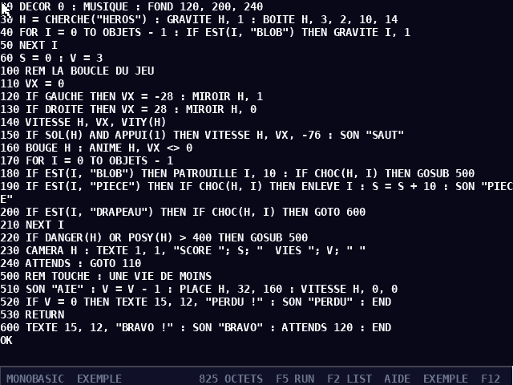
Changez la vitesse des ennemis (ligne 180), le nombre de vies (ligne 60), ajoutez un deuxième niveau dans MONOPIXEL (DECOR 1) ou une nouvelle sorte d'objet. Les chapitres 3 à 6 décrivent chaque outil en détail.
La planche de tuiles et de personnages, les palettes, les lutins animés, les décors, ce que sont les tuiles et où sont les objets.
| Mot | Ce que c'est |
|---|---|
| planche | toutes les images d'une banque, en cellules de 8 × 8 pixels : 4 pages de 16 × 16 cellules (128 × 128 pixels chacune) |
| palette | 16 couleurs ; la couleur 0 est toujours transparente. Une banque a 16 palettes |
| tuile | un morceau de décor : une cellule (8 pixels) ou un carré de 2 × 2 cellules (16 pixels) |
| lutin | un personnage ou un objet : un rectangle de la planche (1 à 8 cellules de côté), une palette, une animation, un nom |
| décor | un niveau : une grille de tuiles de 32, 64 ou 128 cases de côté (4096 cases au plus) |
| attribut | ce qu'est une tuile pour le jeu : solide, plateforme, échelle, eau, danger |
| objet | un lutin posé dans un décor : le départ du héros, une pièce, un ennemi… avec un paramètre de 0 à 255 |
| banque | tout cela ensemble, sauvé dans un emplacement |
Les pages s'ouvrent par F1 DESSIN, F2 LUTINS, F3 DECORS, F4 BANQUE et F5 AIDE, ou par les boutons du haut. Ctrl S sauve et Ctrl Z annule la dernière modification (une seconde fois : la refait).
À gauche, la zone en cours, agrandie (8 à 64 pixels de côté). À droite, la page de la planche : un clic y choisit la zone, un clic droit y recopie la zone en cours (pratique pour l'image suivante d'une animation). En bas, le nuancier de la palette en cours et les compteurs R, V, B (0 à 31) de la couleur A.
| Souris / touche | Rôle |
|---|---|
| clic, clic droit | dessine avec la couleur A, B ; sur le nuancier : choisit A, B ; molette : couleur A ; Tab : couleur suivante |
| C T R P S I | crayon, trait, cadre, pavé (rectangle plein), seau (remplir), pipette (prendre une couleur) |
| X Y O | miroir horizontal, vertical, pivoter d'un quart de tour (zone carrée) |
| flèches | déplacent la zone dans la planche ; avec Maj : décalent ses pixels (en boucle) |
| 1 2 3 4 | zone de 8, 16, 32 ou 64 pixels (ou les compteurs L et H) |
| Page préc. Page suiv. | page de la planche (aussi les boutons 1 à 4) |
| Suppr, Ctrl C, Ctrl V | efface, copie, colle la zone |
| G | grille des pixels et des cellules |
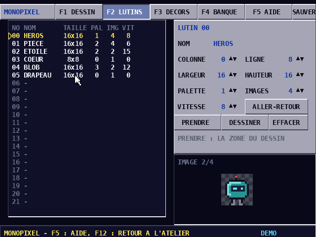
Un lutin est ce que le jeu affiche et déplace. On le crée sur un emplacement vide avec NOUVEAU (ou Entrée) : il prend la zone de la page DESSIN. PRENDRE lui redonne la zone en cours, DESSINER ramène à son image 0. Les compteurs règlent sa place dans la planche (COLONNE, LIGNE), sa taille, sa PALETTE, le nombre d'IMAGES de son animation (côte à côte dans la planche) et sa VITESSE (images vidéo par image ; 0 : immobile). ALLER-RETOUR joue l'animation dans les deux sens. Un clic sur le nom, ou Entrée, permet de le changer.
Le jeu et le BASIC reconnaissent les lutins par leur nom : HEROS, PIECE, BLOB, DRAPEAU pour PLATEFORMES. Gardez ces noms quand vous redessinez, et donnez des noms clairs à vos nouveaux lutins.
À gauche, la vue du décor (on le fait défiler au bouton du milieu, aux flèches — Maj : par 8 tuiles — ou à la molette). À droite, la planche, où l'on choisit la tuile à poser, ou un bloc de tuiles en glissant.
| Outil / réglage | Rôle |
|---|---|
| POSER (C) | clic : pose la tuile ou le bloc ; clic droit : efface |
| PAVE (P), SEAU (S), PIPETTE (I) | un rectangle rempli, remplir une zone, prendre la tuile d'une case |
| H, V, PAL | miroirs de la tuile posée, sa palette |
| DECOR, L, H, TUILES | le décor 1 à 4, sa largeur et sa hauteur (32, 64, 128 ; 4096 cases au plus), des tuiles de 8 ou 16 pixels |
| SOLIDE, PLATEF., ECHELLE, EAU, DANGER | ce que sont les tuiles du pinceau : un mur, une plateforme qu'on traverse par-dessous, une échelle, de l'eau, un danger (piques, lave…) |
| A | montre ou cache les attributs sur la planche : # solide, = plateforme, H échelle, ~ eau, ! danger |
| OBJETS (O) | pose le lutin choisi (flèches à droite du bouton) sur la grille ; un clic sur un objet le prend (on le glisse) ; clic droit ou Suppr : l'enlève ; P : son paramètre |
| TOUT EFFACER | vide le décor et ses objets (après confirmation) |
On peut poser 64 objets par décor. Le paramètre P sert à varier les objets d'une même sorte : dans PLATEFORMES, c'est la vitesse de chaque ennemi.
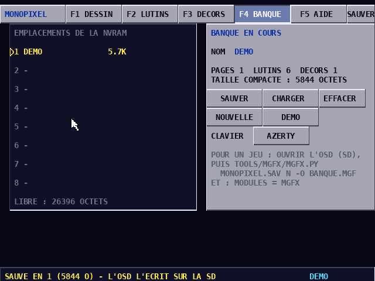
Elle montre les 8 emplacements, le nom de la banque (un clic ou Entrée pour le changer), sa taille compacte et la place libre. Les boutons sont SAUVER (Ctrl S), CHARGER (Ctrl L), EFFACER l'emplacement (Ctrl D), NOUVELLE banque, DEMO et la disposition du CLAVIER (AZERTY ou QWERTY, commune à tout l'atelier). Les actions qui feraient perdre du travail demandent un second clic.
Des sons courts calculés soixante fois par seconde : un saut, une pièce, une explosion. Des générateurs les fabriquent en un clic.
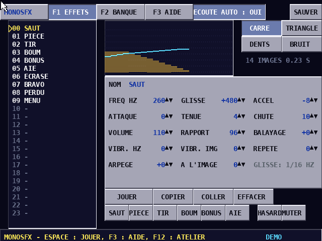
Une banque contient 32 bruitages. Un clic dans la liste choisit un bruitage et le joue, et Espace le rejoue. Avec ÉCOUTE AUTO, chaque changement s'entend aussitôt. Entrée ou un clic sur le nom permet de le renommer : le jeu et le BASIC jouent les sons par leur nom (SON "SAUT").
| Réglage | Effet |
|---|---|
| CARRE, TRIANGLE, DENTS, BRUIT | l'onde : franche, douce, brillante, ou un souffle (explosions, coups) |
| FREQ HZ, GLISSE, ACCEL | la note de départ, ce qu'elle monte ou descend à chaque image (en 1/16 de Hz), et la courbure de cette pente |
| ATTAQUE, TENUE, CHUTE | le volume monte, reste, puis descend : la durée est leur somme, en images (60 par seconde) |
| VOLUME | 0 à 255 |
| RAPPORT, BALAYAGE | la forme du carré (128 : moitié) et son changement à chaque image |
| VIBR. HZ, VIBR. IMG | un vibrato : son écart et sa période |
| ARPEGE, A L'IMAGE | un saut de quelques demi-tons à une image donnée : le « ding-ding » d'une pièce |
| REPETE | la note repart toutes les n images (bonus, alarmes) |
Les générateurs SAUT, PIECE, TIR, BOUM, BONUS et AIE fabriquent un son de ce genre au hasard. HASARD fait n'importe quoi, et MUTER change un peu le son en cours. La bonne méthode : cliquer plusieurs fois sur un générateur jusqu'à un son proche de l'idée, l'affiner, puis le nommer. Les compteurs se règlent au clic (plus), au clic droit (moins), avec Maj par 10, ou à la molette. Ctrl C et Ctrl V copient et collent un bruitage, Suppr l'efface. La page F2 BANQUE fonctionne comme celle de MONOPIXEL.
Le tracker de la MONOCORE-1 : seize pistes, des sons synthétiques et des échantillons, au clavier, à la souris ou au clavier MIDI.
MONOTRACKER a son propre manuel complet, manual/MONOTRACKER_Manuel.pdf. Dans l'atelier, il fonctionne de la même façon, avec quatre pages : F1 MOTIFS (les notes), F2 SONS (les instruments), F3 MORCEAU (l'ordre des motifs, le tempo et les 8 emplacements) et F4 AIDE. Le morceau sauvé (Ctrl S) devient la musique du jeu et du BASIC (instruction MUSIQUE).
Seul, MONOTRACKER utilise F12 pour passer à l'instrument suivant. Dans l'atelier, F12 ramène au lanceur, et l'instrument suivant se choisit avec le + du pavé numérique (F11 ou le − du pavé : le précédent).
Le jeu laisse les canaux PSG 6 et 7 aux bruitages : la musique de l'atelier se joue sur les autres pistes. Une musique qui en a besoin perd ces deux pistes pendant le jeu.
Un BASIC comme sur les ordinateurs des années 80, avec des instructions en français pour les objets, les collisions, les sons et la musique.
L'écran est un éditeur plein écran, à la manière du MO5 ou du Commodore 64. On tape une ligne puis Entrée. Une ligne qui commence par un numéro (120 PRINT "BONJOUR") est rangée dans le programme, à sa place ; un numéro seul efface sa ligne. Une ligne sans numéro est exécutée tout de suite. Les flèches déplacent le curseur partout : on remonte sur une ligne listée, on la corrige, puis Entrée la range à nouveau. Échap efface la ligne du curseur et arrête un programme en cours.
| Commande | Rôle |
|---|---|
RUN [ligne], F5 | lance le programme (depuis le début, ou cette ligne) |
LIST [a][-b], F2 | montre le programme, ou les lignes a à b |
NEW | efface le programme |
SAVE "NOM", LOAD "NOM", LOAD 3, DIR | les 8 programmes de l'atelier ; le dernier sauvé est rechargé au démarrage |
AIDE | le résumé de toutes les instructions, à l'écran |
EXEMPLE | le petit jeu de plateformes, à lire et à modifier |
| F12 | retour à l'atelier |
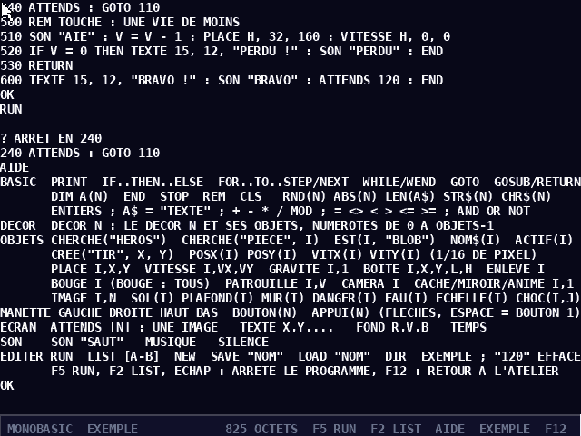
Les nombres sont des entiers. Un nom de variable fait jusqu'à 8 lettres et chiffres (A, SCORE, VX) ; NOM$ est une chaîne (80 caractères au plus). Plusieurs instructions vont sur une ligne, séparées par :. Les mots clés ne sont reconnus que comme mots entiers : TOTAL est une variable.
| Instruction | Rôle |
|---|---|
PRINT a; b, c | ; colle, , va à la colonne suivante, un ; final garde la ligne |
A = 3, A$ = "TEXTE" + B$, T(I) = 5 | affectations (LET est facultatif) |
IF c THEN … ELSE … | sur une seule ligne ; THEN 120 saute à la ligne 120 |
FOR I = 1 TO 10 STEP 2 … NEXT I | une boucle comptée |
WHILE c … WEND | une boucle tant que c est vrai |
GOTO n, GOSUB n … RETURN | sauter, appeler un sous-programme |
DIM T(100) | un tableau de 0 à 100 (sans DIM : 0 à 10) |
END, STOP, REM, CLS | fin, arrêt avec son numéro de ligne, commentaire, effacer le texte |
+ - * / MOD, = <> < > <= >=, AND OR NOT | calculs, comparaisons et logique (vrai vaut 1, faux 0) |
RND(n), ABS(n), LEN(A$), STR$(n), CHR$(n) | hasard de 0 à n−1, valeur absolue, longueur, nombre en texte, caractère |
DECOR n affiche le décor n de la banque d'images de l'atelier et crée ses objets, numérotés de 0 à OBJETS - 1 dans l'ordre où ils ont été posés dans MONOPIXEL. On reconnaît un objet au nom de son lutin, et on lui parle par son numéro.
| Instruction / fonction | Rôle |
|---|---|
CHERCHE("HEROS"), CHERCHE("PIECE", I) | le premier objet de ce lutin, ou le suivant après I (−1 : aucun) |
EST(I, "BLOB"), NOM$(I), ACTIF(I) | ce qu'est l'objet I, s'il existe encore |
CREE("TIR", X, Y) | un nouvel objet ; donne son numéro |
POSX(I), POSY(I), VITX(I), VITY(I) | sa position en pixels, sa vitesse en 1/16 de pixel par image |
PLACE I, X, Y, VITESSE I, VX, VY | les changer |
GRAVITE I, 1, BOITE I, X, Y, L, H | il tombe ; sa boîte de collision (depuis le coin de son lutin) |
BOUGE I (BOUGE : tous) | le déplace selon sa vitesse, arrêté par les murs, porté par les plateformes |
PATROUILLE I, V | le fait marcher, avec demi-tour aux murs et au bord du vide |
SOL(I), PLAFOND(I), MUR(I) | ce que son dernier mouvement a touché |
DANGER(I), EAU(I), ECHELLE(I) | une tuile de cet attribut est sous lui |
CHOC(I, J) | les objets I et J se touchent |
ENLEVE I, CACHE I, 1, MIROIR I, 1, ANIME I, 1, IMAGE I, N | disparaître, ne plus être dessiné, regarder à gauche, s'animer, montrer l'image N |
CAMERA I | la caméra le suit dans le décor |
GAUCHE, DROITE, HAUT, BAS, BOUTON(N), APPUI(N) | la manette 1 (et les flèches ; Espace ou Z = bouton 1, X = bouton 2) ; APPUI : le bouton vient d'être enfoncé |
ATTENDS [n] | dessine les objets et attend l'image suivante : une fois par tour de boucle |
TEXTE X, Y, …, PRINT | écrire sur l'écran du jeu (40 colonnes, 30 lignes) |
SON "SAUT", MUSIQUE, SILENCE | un bruitage par son nom, la musique de l'atelier, le silence |
FOND R, V, B, TEMPS | la couleur du ciel ; les images écoulées depuis RUN |
Presque tous les jeux ont la même forme : une préparation, puis une boucle qui lit la manette, déplace les objets, regarde ce qui se touche, puis dessine une image avec ATTENDS et recommence. Voici le cœur de EXEMPLE :
20 DECOR 0 : MUSIQUE : FOND 120, 200, 240
30 H = CHERCHE("HEROS") : GRAVITE H, 1 : BOITE H, 3, 2, 10, 14
110 VX = 0
120 IF GAUCHE THEN VX = -28 : MIROIR H, 1
130 IF DROITE THEN VX = 28 : MIROIR H, 0
140 VITESSE H, VX, VITY(H)
150 IF SOL(H) AND APPUI(1) THEN VITESSE H, VX, -76 : SON "SAUT"
160 BOUGE H : ANIME H, VX <> 0
170 FOR I = 0 TO OBJETS - 1
190 IF EST(I, "PIECE") THEN IF CHOC(H, I) THEN ENLEVE I : S = S + 10 : SON "PIECE"
210 NEXT I
230 CAMERA H : TEXTE 1, 1, "SCORE "; S
240 ATTENDS : GOTO 110Une erreur arrête le programme et s'affiche avec sa ligne, suivie de la ligne elle-même : ? SYNTAXE EN 150. Les plus fréquentes sont SYNTAXE (un mot mal écrit, une virgule oubliée), LIGNE INEXISTANTE (un GOTO vers une ligne absente), OBJET INEXISTANT (un numéro d'objet trop grand : vérifiez CHERCHE, qui donne −1 si le lutin n'est pas dans le décor), PAS DE DECOR (une instruction de jeu avant DECOR) et TYPE (un nombre là où il faut une chaîne, ou l'inverse). ARRET signale simplement un arrêt par Échap.
MONOBASIC n'a ni nombres à virgule, ni INPUT, ni DATA / READ. Un programme fait au plus 20 Ko.
Un vrai jeu dont tout le contenu vient de l'atelier : on le refait sans écrire une ligne, rien qu'en dessinant.
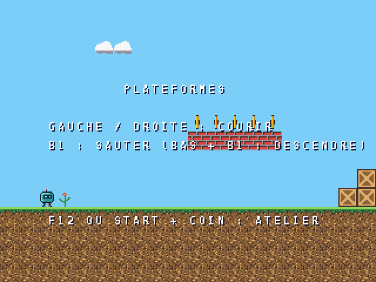
PLATEFORMES prend le décor 0 de la banque d'images, ses attributs et ses objets, les bruitages et la musique choisis dans le lanceur. Il reconnaît les objets par le nom de leur lutin :
| Lutin | Rôle dans le jeu |
|---|---|
HEROS | le joueur : il court, saute (plus haut en tenant B1), descend des plateformes (bas + B1) ; l'eau, une tuile DANGER ou une chute lui font perdre une vie |
PIECE | 10 points |
BLOB | un ennemi qui marche et fait demi-tour au bord du vide ; sa vitesse est le paramètre P de l'objet ; sauté dessus, il disparaît (50 points) |
DRAPEAU | la fin du niveau |
Les bruitages joués sont SAUT, PIECE, ECRASE, AIE, BRAVO, PERDU et MENU. Un nom absent est simplement muet. Le jeu a 3 vies et garde le record dans la sauvegarde de l'atelier.
Dans MONOPIXEL : dessinez le décor 0, réglez les attributs (SOLIDE pour les murs et le sol, PLATEF. pour ce qu'on traverse en sautant, EAU ou DANGER pour ce qui fait perdre une vie), posez un HEROS, des PIECE, des BLOB (P = vitesse) et un DRAPEAU. Sauvez, F12, F5.
Où vont les créations, comment les passer à l'ordinateur, les reprendre des outils seuls, et les mettre dans un jeu écrit en C.
Tout est dans la NVRAM de 32 Ko, écrite sur la carte SD sous saves/MONOCORE/MONOATELIER.sav (le nom suit celui du fichier de la ROM) quand on ouvre le menu de la MiSTer. Chaque outil y a 8 emplacements, et le lanceur affiche la place libre. Pour se faire une idée, la banque d'images de la démonstration fait 6 Ko, son morceau 4 Ko, ses bruitages 352 octets et le programme EXEMPLE un peu plus d'un Ko.
Les outils Python du dépôt lisent et écrivent cette sauvegarde :
python3 tools/atelier/atelier.py MONOATELIER.sav # ce qu'elle contient python3 tools/atelier/atelier.py MONOATELIER.sav --export jeu/ # images_1.mgf, bruits_1.mfx, musique_1.mts, programme_1.mbs python3 tools/atelier/atelier.py MONOATELIER.sav --import MONOPIXEL.sav MONOSFX.sav MONOTRACKER.sav python3 tools/basic/basic.py MONOATELIER.sav 1 -o jeu.bas # un programme BASIC en texte python3 tools/basic/basic.py jeu.bas --to-sav MONOATELIER.sav 2 # et dans l'autre sens python3 tools/mgfx/mgfx.py MONOATELIER.sav 1 --png images/ # la planche, les lutins (GIF animés), les décors
--import reprend dans l'atelier ce qui a été fait avec les outils seuls (outils/MONOPIXEL.mnc…), aux mêmes numéros d'emplacement. Les outils mgfx.py, msfx.py, sav2song.py et basic.py lisent aussi bien la sauvegarde de l'atelier que celle d'un outil seul.
Le simulateur (dist/monocore.html, à ouvrir dans un navigateur) contient MONOATELIER et chaque outil dans sa liste de ROM. La souris et le clavier de la console s'y activent tout seuls (F9 rend le clavier au navigateur). Exporter .sav et Importer .sav… échangent la sauvegarde avec la MiSTer, et Morceaux .mts, Banques .mgf, Bruitages .mfx téléchargent directement les créations.
Les mêmes formats servent aux jeux écrits avec le SDK. Les modules sont mgfx (les banques d'images, sdk/MGFX.md), mjeu (objets, collisions, caméra, sdk/MJEU.md), msfx (les bruitages, sdk/MSFX.md) et mtrack (la musique). examples/plateformes est le modèle d'un tel jeu, et sdk/ATELIER.md explique comment ajouter son jeu à l'atelier (tools/mkatelier.py).
Les raccourcis de chaque programme sur une page, et que faire quand quelque chose ne marche pas.
| Programme | Raccourcis |
|---|---|
| Partout | F12 : lanceur ; Ctrl S : sauver (puis ouvrir le menu de la MiSTer) ; Ctrl Z : annuler (MONOPIXEL) |
| Lanceur | F1 images, F2 bruitages, F3 musique, F4 BASIC, F5 ou Entrée jouer ; clic sur un emplacement : le donner au jeu |
| MONOPIXEL | F1–F5 pages ; dessin : C T R P S I, X Y O, 1–4, G, flèches ; décors : C P S I O, H V, A |
| MONOSFX | F1 effets, F2 banque, F3 aide ; Espace jouer ; Entrée nommer ; Ctrl C Ctrl V Suppr |
| MONOTRACKER | F1 motifs, F2 sons, F3 morceau, F4 aide ; instrument : + et − du pavé ; voir son manuel |
| MONOBASIC | F5 RUN, F2 LIST, Échap arrêt ; AIDE, EXEMPLE, SAVE, LOAD, DIR |
| PLATEFORMES | commencer : B1, START, Espace ou Entrée ; gauche/droite (manette ou flèches), B1, Espace, Z ou X sauter, bas + saut descendre ; START + COIN : lanceur |
| Ce qui se passe | Que faire |
|---|---|
| « demande le core version 5 » | mettre le core de releases/v5_haute_resolution/ (ou plus récent) dans _Console |
| le jeu ne démarre pas sur l'écran titre | PLATEFORMES accepte les boutons B1 à B4 et START des manettes 1 et 2, Espace et Entrée ; si rien ne marche, vérifier dans le menu de la MiSTer l'affectation des boutons de la manette au core |
| les créations ont disparu après avoir éteint | la NVRAM n'est écrite sur la carte SD qu'à l'ouverture du menu : Ctrl S, puis ouvrir et fermer le menu |
| les lettres A et Q (ou Z et W) sont inversées | changer CLAVIER (AZERTY / QWERTY) sur la page BANQUE de MONOPIXEL ou de MONOSFX : le réglage vaut pour tout l'atelier |
| pas de pointeur de souris | brancher la souris avant de lancer le core ; dans le simulateur, cocher « souris de la console » |
| « NVRAM PLEINE » | effacer des emplacements inutiles (page BANQUE, DIR du BASIC), ou exporter les créations sur l'ordinateur |
| le jeu n'affiche pas mon héros | le lutin doit s'appeler exactement HEROS et un objet HEROS doit être posé dans le décor 0 |
| un son ne joue pas | son nom doit être exactement celui que le jeu attend (SAUT…), et la banque de bruitages doit être sauvée |
| le jeu prend la démo au lieu de mes créations | regarder le cadre « LE JEU PREND » du lanceur ; cliquer sur l'emplacement voulu |
MONOBASIC : OBJET INEXISTANT | CHERCHE a donné −1 : le lutin n'est pas dans le décor, ou son nom diffère |
Pour aller plus loin, la documentation technique se trouve dans le dépôt : sdk/ATELIER.md, sdk/MGFX.md, sdk/MJEU.md, sdk/MSFX.md, examples/monobasic/LISEZMOI.md, ainsi que le manuel du programmeur (manual/MONOCORE-1_Manuel_du_programmeur.pdf).